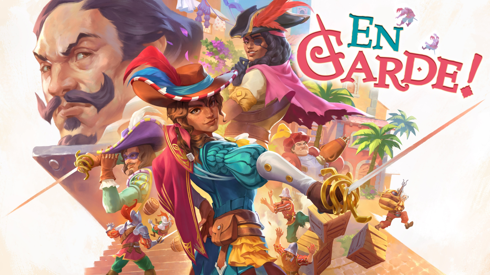

C’est aux commandes d’Adalia de Volador que nous met En Garde!, dont le talent à l’épée n’a d’égal que sa capacité à rire de ses ennemis. Avec quatre niveaux à parcourir, le premier fait office de tutoriel et laisse découvrir un système d’escrime semblable à du pierre-feuille-ciseaux, remplacés bien sûr par de l’esquive-parade-attaque. On use de ces trois mécaniques en fonction des attaques des ennemis, dont certaines ne peuvent être que parées ou esquivées, et l’on prend ainsi l’ascendant sur les adversaires, déboussolés et donc vulnérables. L’ambiance d’En Garde est particulièrement réussie, en étant notamment portée par le caractère bien trempé d’Adalia, l’héroïne. Celle-ci n’hésite pas à balancer de bonnes piques bien placées à ses adversaires alors qu’elle les combat en infériorité numérique, et sa légende la précède tant les ennemis sont nombreux à l’affronter à contrecœur. Battre un ennemi et repasser près de son cadavre sera ainsi l’occasion de l’entendre se plaindre de sa défaite, ou encore supplier Adalia de le laisser tranquille maintenant qu’il est à terre. Les quatre niveaux sont relativement indépendants, constituant autant de petites histoires centrées sur la vie agitée d’Adalia qui se plaît à rendre au peuple ce que le Compte-Duc leur vole. En ressort un sentiment de justice et d’allégresse, tout au long des quatre heures nécessaires à la complétion de l’histoire. En Garde! est court, mais cela évite à son système de combat plutôt simple de tomber dans le répétitif. Un mode arènes ainsi que les succès du jeu viennent prolonger l’expérience et corser le challenge, et l’on pourrait très bien imaginer de nouveaux niveaux à l’avenir, venant enrichir la légende d’Adalia.
